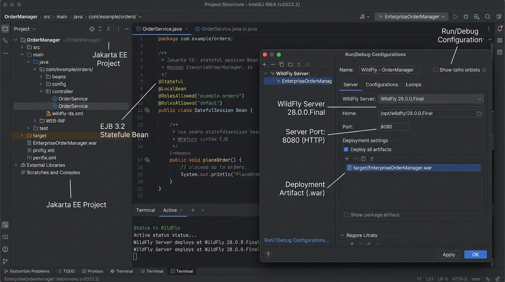

<title>Set Up Your Workshop</title>
<meta name="viewport" content="width=device-width, initial-scale=1">
<meta name="description" content="Set up your workshop from zero: install Eclipse Temurin JDK 17, IntelliJ IDEA Community and WildFly 30+, connect the server to the IDE, and check each stage with a safe in-browser terminal.">
<link rel="stylesheet" href="assets/css/styles.css">
<script>window.PAGE = "01-setup";</script>

<main class="page">

  <h1>Set up your workshop</h1>
  <p class="lede">You do not need any of this to keep reading — every example on this site runs in your
    browser. Do this unit when you want to build and run real code. It assumes you have never installed a
    JDK, never opened IntelliJ, and have no idea what a “PATH” is. We give you <strong>one</strong> path,
    not five.</p>

  <div class="callout callout--key"><span class="callout__i">🎯</span>
    <div class="callout__b"><b>Four promises before we start</b>
      <ol style="margin:.6rem 0 0;padding-left:1.2rem">
        <li><strong>No jargon without a translation.</strong> “JDK”, “PATH”, “JAVA_HOME”, “IDE” and
          “application server” each get a plain-English box the moment they appear.</li>
        <li><strong>Nothing is assumed.</strong> If you have never installed a JDK or opened an IDE, this
          page is written for you.</li>
        <li><strong>One path only.</strong> Temurin JDK 17, IntelliJ, WildFly — in that order. Not five
          alternatives to weigh up.</li>
        <li><strong>You can practise safely.</strong> The pretend terminal on this page touches nothing on
          your computer.</li>
      </ol>
    </div>
  </div>

  <h2>What you will be able to do by the end</h2>
  <p>Six plain outcomes. Each one is something you can check for yourself before moving on.</p>
  <div class="tablewrap"><table>
    <thead><tr><th>By the end you can…</th><th>Where it is taught</th></tr></thead>
    <tbody>
      <tr><td>Install JDK 17 and prove it works with <code>java -version</code></td><td>Step 1</td></tr>
      <tr><td>Explain what <code>JAVA_HOME</code> and <code>PATH</code> are — and fix them when Java is “not recognised”</td><td>Step 1</td></tr>
      <tr><td>Install IntelliJ IDEA Community and create a Maven project</td><td>Step 2</td></tr>
      <tr><td>Install WildFly 30+ and connect it to IntelliJ as a “Local” run configuration</td><td>Step 3</td></tr>
      <tr><td>Start WildFly and reach its welcome page at <code>http://localhost:8080</code></td><td>Step 3</td></tr>
      <tr><td>Recognise and fix the five most common setup errors</td><td>Common setup mistakes</td></tr>
    </tbody>
  </table></div>

  <div class="callout"><span class="callout__i">📖</span>
    <div class="callout__b"><b>How to read this page</b>
      The small labels on the left of each block tell you what kind of block it is.
      <ul style="margin:.6rem 0 0">
        <li><code>// concept</code> — an explanation to read.</li>
        <li><code>// terminal</code> — a pretend command line. Nothing touches your computer.</li>
        <li><code>// checkpoint</code> — a quick self-test. Answers are hidden until you ask.</li>
        <li><code>// check yourself</code> — the quiz.</li>
        <li><code>// recap</code> — the one-line summary of everything.</li>
      </ul>
      Work through the three steps in order. Each one ends with a checkpoint, so you can tick that stage
      off before you start the next.
    </div>
  </div>

  <hr>

  <!-- =====================================================================
       WHAT YOU ARE INSTALLING, AND WHY
       ===================================================================== -->

  <span class="eyebrow">concept</span>
  <h2>What you are installing, and why</h2>
  <p>Three programs, installed in order. Each one needs the one before it.</p>

  <div class="tablewrap"><table>
    <thead><tr><th>#</th><th>Tool</th><th>Version</th><th>Its job, in one line</th></tr></thead>
    <tbody>
      <tr><td>1</td><td><strong>Eclipse Temurin JDK</strong></td><td>17 (LTS)</td><td>Compiles and runs Java.</td></tr>
      <tr><td>2</td><td><strong>IntelliJ IDEA</strong> Community</td><td>latest</td><td>Where you write, navigate and run code. Comes with Maven built in.</td></tr>
      <tr><td>3</td><td><strong>WildFly</strong></td><td>30+</td><td>The application server — the thing that runs your beans.</td></tr>
    </tbody>
  </table></div>

  <div class="callout callout--key"><span class="callout__i">✦</span>
    <div class="callout__b"><b>The three words on the sign</b>
      <ul style="margin:.6rem 0 0">
        <li><strong>JDK</strong> (Java Development Kit) — the toolkit that compiles and runs Java.</li>
        <li><strong>IDE</strong> (Integrated Development Environment) — one program that lets you write,
          run and debug code in the same window, instead of juggling separate tools.</li>
        <li><strong>Application server</strong> — a large program that stays running all day and runs
          your application inside it. Ours is WildFly.</li>
      </ul>
    </div>
  </div>

  <h3>Why the JDK has to come first</h3>
  <p>The JDK is the toolkit that turns the Java you type into something the computer can run. Without it,
    nothing else on this page can do anything at all. IntelliJ needs it. WildFly needs it.</p>
  <p><strong>Temurin</strong> is the free, no-login build of the JDK, made by the Eclipse Foundation. Use
    it instead of the Oracle download, which asks you to create an account and attaches licence strings
    to it.</p>
  <p>Version <strong>17</strong> is an <strong>LTS</strong> release — “Long-Term Support” — which simply
    means it is a version everyone agrees to keep patched and stable for years. That is why this course
    pins it rather than chasing the newest number.</p>

  <div class="plainwords"><b>In plain words</b>
    <p>A <strong>JDK</strong> is the toolkit that both writes Java and runs it. Everything else you
      install sits on top of it.</p>
    <p>“<strong>LTS</strong>” just means “the steady version that stays supported for years”, as opposed
      to a brand-new version that changes often.</p>
  </div>

  <div class="callout callout--analogy"><span class="callout__i">🔌</span>
    <div class="callout__b"><b>Analogy</b>
      The JDK is the plug socket on the wall. You cannot plug in the lamp (IntelliJ) or the fridge
      (WildFly) until the socket exists. Put the socket in first, and everything else has power.</div>
  </div>

  <h3>Two invisible settings: <code>JAVA_HOME</code> and <code>PATH</code></h3>
  <p>These two words cause more first-day confusion than anything else, so here they are <em>before</em>
    you meet them in a warning message.</p>
  <ul>
    <li>An <strong>environment variable</strong> is a named setting stored by your operating system and
      remembered by every program that runs. You set it once; the computer keeps it.</li>
    <li><strong><code>JAVA_HOME</code></strong> is an environment variable that holds the folder where
      the JDK is installed. It is the computer’s note of “where Java lives”.</li>
    <li><strong><code>PATH</code></strong> is a list of folders the computer searches, in order, when you
      type a command in a terminal. If the folder holding <code>java</code> is not on that list, the
      terminal answers “not recognised”.</li>
  </ul>

  <div class="plainwords"><b>In plain words</b>
    <p><code>JAVA_HOME</code> answers “where is the JDK?”. <code>PATH</code> answers “where should I look
      when you type a command?”.</p>
    <p>Setting both is what lets you type <code>java -version</code> in any terminal and get an answer
      instead of an error.</p>
  </div>

  <div class="callout callout--analogy"><span class="callout__i">🧰</span>
    <div class="callout__b"><b>Analogy</b>
      Picture a cook at a workbench who only ever reaches for the tools laid out <em>on the bench</em>. A
      tool still sitting in a drawer might as well not exist. <code>PATH</code> is that bench: if Java’s
      folder is not laid out on it, the computer behaves as if Java were never installed.</div>
  </div>

  <div class="callout callout--mistake"><span class="callout__i">⚠️</span>
    <div class="callout__b"><b>What we deliberately changed from the original setup guide</b>
      The old guide linked the Oracle JDK (needs an account, has licence strings attached) and mixed
      Eclipse and IntelliJ steps. This version uses <strong>Temurin JDK 17</strong>, <strong>IntelliJ
      only</strong>, and <strong>one Jakarta EE version (10)</strong>. Simpler, fully free.</div>
  </div>

  <hr>

  <!-- =====================================================================
       STEP 1 — THE JDK
       ===================================================================== -->

  <span class="eyebrow">concept</span>
  <h2>Step 1 — Install the JDK</h2>
  <p>Three actions. Do them in order, then run the checkpoint at the bottom.</p>

  <ol class="steps">

    <li>
      <h4>Download the installer</h4>
      <p>Go to <strong>adoptium.net</strong> → <strong>“Latest LTS Release”</strong> → pick
        <strong>17</strong> for your operating system. On Windows, choose the <code>.msi</code>
        installer.</p>
    </li>

    <li>
      <h4>Run the installer</h4>
      <p>Run it and accept the default folder. On Windows, tick <strong>“Set JAVA_HOME variable”</strong>
        and <strong>“Add to PATH”</strong> if they are offered — that saves you the manual fix later.</p>
    </li>

    <li>
      <h4>Open a fresh terminal and check it</h4>
      <p>Close any terminal you already had open first — an old window will not know about the new
        settings. Then open a new one and type:</p>
      <pre><code>java -version</code></pre>
      <p>Practise the same commands in the panel below. It is safe: it simulates a command line on your
        screen and touches nothing on your computer.</p>
    </li>

  </ol>

  <div class="terminal" data-terminal="setup">
    <div class="terminal__bar"></div>
    <div class="terminal__screen"></div>
    <div class="terminal__inputline"></div>
  </div>
  <p style="font-size:.9rem;color:var(--ink-faint)">Type <code>java -version</code> then
    <code>echo %JAVA_HOME%</code> (Windows) or <code>echo $JAVA_HOME</code> (Mac/Linux). You want a
    line starting <code>openjdk version "17</code>.</p>

  <div class="callout callout--tip"><span class="callout__i">💡</span>
    <div class="callout__b"><b>The one thing to notice</b>
      You are looking for a line that starts <code>openjdk version "17</code>. If the output shows a
      different number — 8, 11, 21 — the wrong JDK is being found first, and later builds will fail in
      confusing ways. Fix it now, while it is one clear problem.</div>
  </div>

  <div class="callout callout--mistake"><span class="callout__i">🩹</span>
    <div class="callout__b"><b>If <code>java</code> is “not recognised”</b>
      The PATH was not set. Windows: search “environment variables” → add a system variable
      <code>JAVA_HOME</code> pointing at the JDK folder, then add <code>%JAVA_HOME%\bin</code> to
      <code>Path</code>. Close and reopen the terminal. Nothing is broken — the computer simply has not
      been told where to look.</div>
  </div>

  <div class="callout callout--analogy"><span class="callout__i">🔑</span>
    <div class="callout__b"><b>Analogy</b>
      <code>JAVA_HOME</code> is the address label on a parcel. <code>PATH</code> is the list of streets
      the delivery driver is allowed to check. Give the driver the street, and the parcel arrives.</div>
  </div>

  <div class="checkpoint"><b>Checkpoint 1 · before you move on</b>
    <p>Answer out loud, in your own words. Then open the answers.</p>
    <ol>
      <li>What does <strong>JDK</strong> stand for, and what does it do?</li>
      <li>What exactly does <code>JAVA_HOME</code> point at?</li>
      <li><code>java -version</code> says the command is “not recognised”. What is the most likely
        cause?</li>
    </ol>
    <details>
      <summary><strong>Show answers</strong></summary>
      <ol>
        <li><strong>Java Development Kit.</strong> It is the toolkit that both compiles the Java you type
          and runs the result. Everything else is installed on top of it.</li>
        <li>The <strong>folder on your computer where the JDK is installed</strong>. It is the
          computer’s note of where Java lives.</li>
        <li>The <strong><code>PATH</code> does not include the JDK’s <code>bin</code> folder</strong>, so
          the terminal never looks there. Java may be installed perfectly — the terminal simply does not
          know where to look. Set <code>JAVA_HOME</code>, add <code>%JAVA_HOME%\bin</code> to
          <code>Path</code>, and reopen the terminal.</li>
      </ol>
    </details>
  </div>

  <hr>

  <!-- =====================================================================
       STEP 2 — INTELLIJ IDEA
       ===================================================================== -->

  <span class="eyebrow">concept</span>
  <h2>Step 2 — Install IntelliJ IDEA</h2>
  <p>Your IDE — the one window where you will write, run and debug code for the rest of the course.</p>

  <div class="callout callout--analogy"><span class="callout__i">🛠️</span>
    <div class="callout__b"><b>Analogy</b>
      An IDE is a chef’s workbench with every tool within arm’s reach: the chopping board (writing code),
      the stove (running it) and the tasting spoon (debugging) all in one place, instead of walking
      between three different rooms.</div>
  </div>

  <ol class="steps">

    <li>
      <h4>Download Community Edition</h4>
      <p>Get it from <strong>jetbrains.com/idea/download</strong> → the <strong>Community Edition</strong>
        (free) is enough for this course.</p>
    </li>

    <li>
      <h4>Install with the defaults</h4>
      <p>Install with the defaults. On first launch, skip the plugin marketplace prompts.</p>
    </li>

    <li>
      <h4>Create your first project</h4>
      <p><strong>File → New → Project → Maven Archetype</strong> (or “Jakarta EE”) creates a project whose
        <code>pom.xml</code> is already wired up. An <strong>archetype</strong> is a ready-made project
        template — a starter skeleton you fill in.</p>
    </li>

  </ol>

  <div class="callout callout--tip"><span class="callout__i">💡</span>
    <div class="callout__b"><b>The one thing to notice</b>
      You were never asked to install Maven. That is the point — it is <strong>bundled inside
      IntelliJ</strong>. When a project is created this way, the <code>pom.xml</code> is already set up,
      and IntelliJ can build the project with no extra downloads.</div>
  </div>

  <div class="checkpoint"><b>Checkpoint 2 · before you move on</b>
    <p>Answer out loud, in your own words. Then open the answers.</p>
    <ol>
      <li>Which edition of IntelliJ does this course use, and why?</li>
      <li>Do you need to install Maven separately? Why or why not?</li>
      <li>Which menu path creates a project whose <code>pom.xml</code> is already wired up?</li>
    </ol>
    <details>
      <summary><strong>Show answers</strong></summary>
      <ol>
        <li><strong>Community Edition</strong> — it is the free edition, and it is enough for everything
          this course does.</li>
        <li><strong>No.</strong> IntelliJ bundles a working Maven (3.9+), so builds work straight from
          the IDE. A separate install is only ever a fallback.</li>
        <li><strong>File → New → Project → Maven Archetype</strong> (or “Jakarta EE”).</li>
      </ol>
    </details>
  </div>

  <hr>

  <!-- =====================================================================
       STEP 3 — WILDFLY AND THE CONNECTION
       ===================================================================== -->

  <span class="eyebrow">concept</span>
  <h2>Step 3 — Install WildFly and connect it to IntelliJ</h2>
  <p>WildFly is the <strong>application server</strong>: the large program that stays running and runs
    your beans inside it. Then you tell IntelliJ how to start it, so one click runs everything.</p>

  <div class="callout callout--analogy"><span class="callout__i">🍳</span>
    <div class="callout__b"><b>Analogy</b>
      WildFly is a kitchen that is already built, staffed and connected to gas and water. You do not
      build an oven each time you want to cook — you walk into the kitchen and hand it a recipe. Your
      application is the recipe.</div>
  </div>

  <ol class="steps">

    <li>
      <h4>Download and unzip WildFly</h4>
      <p>Download <code>wildfly-30.x.x.Final.zip</code> from <strong>wildfly.org/downloads</strong>.
        Unzip it somewhere stable, e.g. <code>C:\wildfly</code>.</p>
      <div class="plainwords"><b>In plain words</b>
        <p>That folder is your <strong>WildFly home</strong>. Later units write paths like
          <code>C:\wildfly\standalone\deployments\</code> — if you unzipped yours somewhere else,
          substitute your own folder. The commands never change; only the path does.</p>
      </div>
    </li>

    <li>
      <h4>Create a new run configuration</h4>
      <p>In IntelliJ: the Run configuration dropdown (top right) → <strong>Edit Configurations…</strong>
        → <strong>+</strong> → <strong>JBoss / WildFly Server → Local</strong>.</p>
    </li>

    <li>
      <h4>Point it at your WildFly folder</h4>
      <p>Set <strong>Application server</strong> → <strong>Configure…</strong> → point it at your
        unzipped WildFly folder. Leave HTTP port <code>8080</code>, management port
        <code>9990</code>.</p>
    </li>

    <li>
      <h4>Add what should be deployed</h4>
      <p>On the <strong>Deployment</strong> tab, click <strong>+</strong> and add your project’s
        <code>war</code> (or <code>war exploded</code>) artifact.</p>
    </li>

    <li>
      <h4>Start the server</h4>
      <p><strong>Apply → OK</strong>, then press the green <strong>Run</strong> (▶) button.</p>
    </li>

  </ol>

  <div class="callout callout--tip"><span class="callout__i">💡</span>
    <div class="callout__b"><b>The one thing to notice</b>
      Two ports, two jobs. <code>8080</code> is where your application is served — that is the number you
      type in a browser. <code>9990</code> is the management console, where you administer the server.
      Leave both at their defaults for now; changing them is what causes “address already in use”
      later.</div>
  </div>

  <figure>
    
    <figcaption><b>Takeaway:</b> a WildFly “Local” run configuration = a folder path + a list of
      artifacts to deploy. After this, ▶ starts the server and deploys your app in one click.</figcaption>
  </figure>

  <p>WildFly is up when the console prints a line like
    <code>WildFly Full 30.0.1.Final started in 3512ms</code>. Then open
    <strong>http://localhost:8080</strong> for the welcome page and
    <strong>http://localhost:9990</strong> for the admin console.</p>

  <div class="callout callout--tip"><span class="callout__i">💡</span>
    <div class="callout__b"><b>The one thing to notice</b>
      “<code>started in …ms</code>” is your green light. Nothing else will work until that line appears —
      if a browser page fails, read the console first, because the answer is almost always on that
      line.</div>
  </div>

  <div class="checkpoint"><b>Checkpoint 3 · before you move on</b>
    <p>Answer out loud, in your own words. Then open the answers.</p>
    <ol>
      <li>What is an application server, and why does your app need one?</li>
      <li>Which two ports do you leave alone when configuring WildFly, and what is each for?</li>
      <li>What line in the console tells you WildFly has finished starting?</li>
    </ol>
    <details>
      <summary><strong>Show answers</strong></summary>
      <ol>
        <li>A <strong>large program that stays running and runs your application inside it</strong>,
          supplying the services your beans rely on. You do not rebuild it each time; you deploy to
          it.</li>
        <li><strong><code>8080</code></strong> for serving your application (the browser address) and
          <strong><code>9990</code></strong> for the admin console.</li>
        <li>A line like <strong><code>WildFly Full 30.0.1.Final started in 3512ms</code></strong> — in
          particular, the words “started in …ms”.</li>
      </ol>
    </details>
  </div>

  <hr>

  <!-- =====================================================================
       TROUBLESHOOTING
       ===================================================================== -->

  <span class="eyebrow">concept</span>
  <h2>Common setup mistakes</h2>
  <p>Everyone hits at least one of these. Find your symptom, read what it means, apply the fix. This is
    normal developer work, not a sign that you broke something.</p>

  <div class="tablewrap"><table>
    <thead><tr><th>❌ What you see</th><th>What it means</th><th>What to do</th></tr></thead>
    <tbody>
      <tr><td><code>java -version</code> not recognised</td><td>PATH / JAVA_HOME not set</td><td>Set <code>JAVA_HOME</code>, add <code>%JAVA_HOME%\bin</code> to PATH, reopen terminal</td></tr>
      <tr><td>WildFly won’t start — “address already in use”</td><td>Port 8080 taken by another app</td><td>Close the other program, or start WildFly with <code>-Djboss.socket.binding.port-offset=100</code></td></tr>
      <tr><td>“No Java virtual machine found”</td><td>JDK broken or wrong architecture</td><td>Reinstall the 64-bit Temurin JDK, restart the machine</td></tr>
      <tr><td>Red squiggles under <code>@Stateless</code></td><td>Jakarta EE API not on the project’s path</td><td>Add <code>jakarta.jakartaee-api</code> (scope <code>provided</code>) to <code>pom.xml</code>, reload Maven</td></tr>
      <tr><td>Deploy fails silently</td><td>Stale build</td><td>Right-click project → Rebuild, then re-run</td></tr>
    </tbody>
  </table></div>

  <div class="checkpoint"><b>Checkpoint · after troubleshooting</b>
    <p>One last check before the quiz.</p>
    <ol>
      <li>Which of the five symptoms points at a missing Maven dependency rather than a broken install?</li>
      <li>Which symptom is usually <em>not</em> the JDK’s fault at all?</li>
    </ol>
    <details>
      <summary><strong>Show answers</strong></summary>
      <ol>
        <li><strong>Red squiggles under <code>@Stateless</code></strong> — the API is missing from the
          project’s path, so add <code>jakarta.jakartaee-api</code> and reload Maven.</li>
        <li><strong>“address already in use”</strong> — that is another program holding port 8080, not a
          Java problem. Reinstall nothing; close the other app or shift WildFly’s ports.</li>
      </ol>
    </details>
  </div>

  <hr>

  <!-- =====================================================================
       QUIZ
       ===================================================================== -->

  <span class="eyebrow">check yourself</span>
  <section class="quiz" data-quiz>
    <h3>Check yourself</h3>
    <script type="application/json">
    [
      {"q":"Which JDK does this course recommend, and why?","opts":["Oracle JDK — it is the official one","Eclipse Temurin — free, with no account or licence hassle","Any JDK from version 8 onward","You do not need one, because IntelliJ includes Java"],"a":1,"why":"Temurin (from Adoptium) is the free, no-login OpenJDK build. Version 17 LTS is the target here."},
      {"q":"Do you need to install Maven separately?","opts":["Yes, from maven.apache.org","No — IntelliJ bundles it","Only on Windows","Only if you use WildFly"],"a":1,"why":"IntelliJ ships with a working Maven, so builds work from the IDE with no separate install."},
      {"q":"WildFly's normal HTTP port and admin-console port are:","opts":["80 and 443","8080 and 9990","3306 and 5432","8000 and 8001"],"a":1,"why":"http://localhost:8080 serves your app; http://localhost:9990 is the management console."},
      {"q":"The terminal says java is not recognised. What does that most likely mean?","opts":["Java is not installed at all","The PATH does not include the JDK's bin folder","Your computer is too old","You must reinstall Windows"],"a":1,"why":"Java is probably installed fine; the terminal simply cannot find it. Set JAVA_HOME, add the JDK's bin folder to PATH, then reopen the terminal."},
      {"q":"You see red underlines under @Stateless in a new project. Most likely cause?","opts":["WildFly is not running","The Jakarta EE API dependency is missing from pom.xml","You need to restart the computer","@Stateless was removed from Jakarta EE"],"a":1,"why":"The annotations live in jakarta.jakartaee-api. Add it (scope provided) and reload Maven."}
    ]
    </script>
  </section>

  <hr>

  <!-- =====================================================================
       REFERENCE — optional depth, collapsed by default
       ===================================================================== -->

  <span class="eyebrow">concept</span>
  <h2>Reference — the parts you can look up later</h2>
  <p>Nothing here is needed to follow the three steps. Keep it for the day you reinstall, or move to a new
    machine, and want the exact addresses and settings in one place. Open only what you need.</p>

  <details>
    <summary><strong>📋 Exact download links and what to pick</strong></summary>
    <div class="tablewrap"><table>
      <thead><tr><th>Tool</th><th>Where to get it</th><th>What to choose</th></tr></thead>
      <tbody>
        <tr><td><strong>Eclipse Temurin JDK</strong></td><td><strong>adoptium.net</strong></td><td>“Latest LTS Release” → <strong>17</strong> → the <code>.msi</code> installer on Windows</td></tr>
        <tr><td><strong>IntelliJ IDEA</strong></td><td><strong>jetbrains.com/idea/download</strong></td><td><strong>Community Edition</strong> (free)</td></tr>
        <tr><td><strong>WildFly</strong></td><td><strong>wildfly.org/downloads</strong></td><td><code>wildfly-30.x.x.Final.zip</code>, unzipped to e.g. <code>C:\wildfly</code></td></tr>
        <tr><td>Maven</td><td>Bundled inside IntelliJ</td><td>Nothing to download — use the bundled 3.9+</td></tr>
        <tr><td>PostgreSQL + DBeaver</td><td>Install later, from <a href="session-03-resource-creation.html">Session 3</a> onward</td><td>16+ / latest — not needed now</td></tr>
      </tbody>
    </table></div>
  </details>

  <details>
    <summary><strong>📦 The full version table — what each tool is</strong></summary>
    <div class="tablewrap"><table>
      <thead><tr><th>#</th><th>Tool</th><th>Version</th><th>Its job</th></tr></thead>
      <tbody>
        <tr><td>1</td><td><strong>Eclipse Temurin JDK</strong></td><td>17 (LTS)</td><td>Compiles and runs Java. Temurin is the free, no-login build of the JDK — use it instead of the Oracle download.</td></tr>
        <tr><td>2</td><td><strong>IntelliJ IDEA</strong> Community</td><td>latest</td><td>Where you write, navigate and run code. Comes with Maven built in. (Eclipse also works but this course uses IntelliJ.)</td></tr>
        <tr><td>3</td><td><strong>WildFly</strong></td><td>30+</td><td>The Jakarta EE application server — the “restaurant” that runs your beans. Free, open-source.</td></tr>
        <tr><td>4</td><td>Maven</td><td>3.9+</td><td>Build tool. Bundled inside IntelliJ — no separate install needed.</td></tr>
        <tr><td>5</td><td>PostgreSQL + DBeaver</td><td>16+ / latest</td><td>Database and a GUI for it. Only needed from <a href="session-03-resource-creation.html">Session 3</a> onward — install later.</td></tr>
      </tbody>
    </table></div>
  </details>

  <details>
    <summary><strong>⚙️ The WildFly ↔ IntelliJ connection settings, field by field</strong></summary>
    <div class="tablewrap"><table>
      <thead><tr><th>Where in IntelliJ</th><th>What to set it to</th></tr></thead>
      <tbody>
        <tr><td>Run configuration dropdown (top right) → <strong>Edit Configurations…</strong> → <strong>+</strong></td><td>Choose <strong>JBoss / WildFly Server → Local</strong></td></tr>
        <tr><td><strong>Application server</strong> → <strong>Configure…</strong></td><td>Point at your unzipped WildFly folder, e.g. <code>C:\wildfly</code></td></tr>
        <tr><td><strong>HTTP port</strong></td><td><code>8080</code> (leave the default)</td></tr>
        <tr><td><strong>Management port</strong></td><td><code>9990</code> (leave the default)</td></tr>
        <tr><td><strong>Deployment</strong> tab → <strong>+</strong></td><td>Add your project’s <code>war</code> (or <code>war exploded</code>) artifact</td></tr>
        <tr><td>Finish</td><td><strong>Apply → OK</strong>, then press the green <strong>Run</strong> (▶) button</td></tr>
      </tbody>
    </table></div>
    <p>Once running: <strong>http://localhost:8080</strong> is the welcome page, and
      <strong>http://localhost:9990</strong> is the admin console.</p>
  </details>

  <details>
    <summary><strong>🧰 The commands that prove everything works</strong></summary>
    <div class="tablewrap"><table>
      <thead><tr><th>Type this</th><th>What you want to see</th></tr></thead>
      <tbody>
        <tr><td><code>java -version</code></td><td>A line starting <code>openjdk version "17</code></td></tr>
        <tr><td><code>echo %JAVA_HOME%</code> (Windows)</td><td>The folder where the JDK is installed</td></tr>
        <tr><td><code>echo $JAVA_HOME</code> (Mac/Linux)</td><td>The folder where the JDK is installed</td></tr>
      </tbody>
    </table></div>
    <p>Run these in a <em>fresh</em> terminal — one opened after the install, or it will not yet see the
      new settings.</p>
  </details>

  <hr>

  <!-- =====================================================================
       RECAP
       ===================================================================== -->

  <span class="eyebrow">recap</span>
  <h2>One-line summary</h2>
  <div class="tablewrap summary"><table><tbody>
    <tr><td>JDK</td><td>Eclipse Temurin 17 — compiles &amp; runs Java. Verify with <code>java -version</code>.</td></tr>
    <tr><td>IDE</td><td>IntelliJ IDEA Community — editor + Maven. One tool, this whole course.</td></tr>
    <tr><td>Server</td><td>WildFly 30+ — runs your beans. Connect it as a “Local” run config in IntelliJ.</td></tr>
    <tr><td>Up &amp; running</td><td>Console says “…started in …ms”; http://localhost:8080 shows the welcome page.</td></tr>
    <tr><td>Database</td><td>PostgreSQL + DBeaver — install later, from <a href="session-03-resource-creation.html">Session 3</a>.</td></tr>
    <tr><td><code>JAVA_HOME</code> / <code>PATH</code></td><td>Where the JDK lives, and where the terminal looks. Both must be set for <code>java</code> to be found.</td></tr>
  </tbody></table></div>

  <span class="eyebrow">concept</span>
  <h2>Where you will meet this again</h2>
  <p>Everything you just installed is used by every unit from here on:</p>
  <div class="tablewrap"><table>
    <thead><tr><th>From this unit</th><th>Comes back in</th></tr></thead>
    <tbody>
      <tr><td>IntelliJ + a wired-up Maven project</td><td><a href="session-01-02-intro-and-beans.html">Sessions 1 &amp; 2 — Enterprise Beans</a> (the Part 4 lab builds one)</td></tr>
      <tr><td>Practising commands in the in-browser terminal</td><td><a href="session-03-resource-creation.html">Session 3 — Resource Creation</a></td></tr>
      <tr><td>WildFly, ports and deploying a <code>war</code></td><td><a href="session-14-packaging.html">Session 14 — Packaging &amp; Deployment</a></td></tr>
      <tr><td>Fixing connection and port problems</td><td><a href="session-08-connectors.html">Session 8 — Connectors</a></td></tr>
      <tr><td>PostgreSQL + DBeaver</td><td><a href="13-jpa-persistence.html">Bonus — JPA: Storing Objects Properly</a></td></tr>
    </tbody>
  </table></div>

  <!-- ===== GO DEEPER: OFFICIAL DOCUMENTATION ===== -->
  <section class="further-study">
    <h2>📖 Go deeper — the official documentation</h2>
    <p class="fs-intro">This course explains the ideas; the specifications are where you check the exact rules. Every link below is the authoritative source. They are also stable: unlike a video, a specification page does not quietly disappear or turn out to be about something else.</p>

    <div class="callout callout--docs">
      <span class="callout__i">📖</span>
      <div class="callout__b">
        <strong>Official Guides &amp; Specifications:</strong>
        <ul>
          <li><a href="https://docs.wildfly.org/" target="_blank" rel="noopener">WildFly — official documentation</a></li>
          <li><a href="https://maven.apache.org/install.html" target="_blank" rel="noopener">Apache Maven — Installing Maven</a></li>
          <li><a href="https://jakarta.ee/compatibility/" target="_blank" rel="noopener">Jakarta EE — compatible products (application servers)</a></li>
        </ul>
      </div>
    </div>
  </section>

</main>

<script src="assets/js/course.js"></script>
<script src="assets/js/runner.js"></script>
<script src="assets/js/terminal.js"></script>
